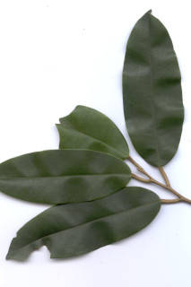
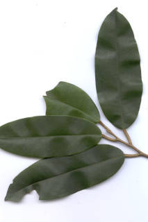
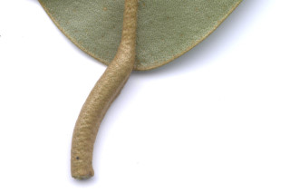
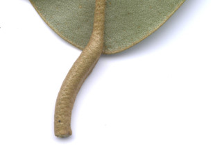
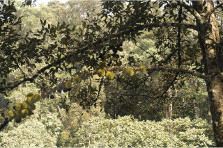
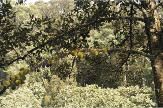

Large evergreen trees, buttressed, up to 40 m tall.
ಆನಿಕೆಗಳನ್ನುಳ್ಳ, ಬೃಹತ್ ಹರಿದ್ವರ್ಣ ವೃಕ್ಷವಾದ ಈ ಪ್ರಭೇದ 40ಮೀ ಎತ್ತರದವರೆಗೆ ಬೆಳೆಯುತ್ತದೆ.
40 മീറ്റര് വരെ ഉയരത്തില് വളരുന്ന, വപ്രമൂലത്തോട് കൂടിയ വന് നിത്യഹരിത മരങ്ങള്.
பெரிய பசுமைமாறாமரம், தாங்கு வேர் (பட்ரஸ்டு) உடையது, 40 மீ. உயரம் வரை வளரக்கூடியது.
Bark greyish white smooth when young later flaky.
ತೊಗಟೆ ಬೂದು ಮಿಶ್ರಿತ ಶ್ವೇತ ಬಣ್ಣ ಹೊಂದಿದ್ದು ಎಳೆಯದಾಗಿದ್ದಾಗ ನಯವಾಗಿದ್ದು ಬಲಿತ ಮೇಲೆ ಚಕ್ಕೆಯುಕ್ತ ಮಾದರಿಯಲ್ಲಿರುತ್ತವೆ.
പുറംതൊലി ഇളതായിരിക്കമ്പോള് നരച്ച വെളുത്ത നിറവും മിനുസമാര്ന്നതും, പിന്നീട് ഇളകിപ്പോകുന്നതുമാണ്.
மரத்தின் பட்டை சாம்பல் கலந்த வெள்ளை நிறமானது, முதிர்ந்த மரங்களில் பெரிய செதில்களாக உதிரக்கூடியவை.
Young branchlets covered by golden brown peltate_scales.
ಎಳೆ ಕಿರುಕೊಂಬೆಗಳು ಸುವರ್ಣ ಮಿಶ್ರಿತ ಕಂದು ಬಣ್ಣದ, ಮಧ್ಯ ತೊಟ್ಟುಳ್ಳ ಶಲ್ಕಗಳಿಂದ ಆವರಿಸಿರುತ್ತವೆ.
ഇളം ഉപശാഖകള് സ്വര്ണ്ണ-തവിട്ടുനിറത്തിലുളള ശല്ക്കങ്ങളാല് ആവൃതമാമാണ്.
சிறிய நுனிக்கிளைகள் பொன் நிறம் கலந்த அரக்கு நிறமான செதில்களுடையவை.
Leaves simple, alternate, distichous; petiole terete, peltate_scales, 1.5 cm long; lamina 7.5-16 (-25.5) x 2.7-6.2 (-7.6) cm, narrow oblong or oblong-lanceolate, apex slightly acuminate, base rounded-retuse, margin entire, coriaceous, glabrous and smooth above, lower surface covered by peltate_scales; midrib canaliculate above; secondary and tertiary_nerves obscure.
ഇലകള് ലഘുവും, ഏകാന്തരക്രമത്തില്, തിന്റെ ര്ഭാഗത്ത് മാത്രമായി ക്രമീകരിച്ചിരിക്കുന്നതുമാണ്; ഇലഞെട്ട് ഉരുതും ശല്ക്കങ്ങള് നിറഞ്ഞതുമാണ്, 1.5 സെ.മീ നീളം; ഫലകത്തിന് 7.5 സെ. മീ മുതല് 16 സെ. മീ വരെ (25.5 സെ. മീ വരെയും) നീളവും 2.7 സെ. മീ മുതല് 6.2 സെ.മീ വരെ (7.6 സെ.മീ വരെയും) വീതിയും, വീതികുറഞ്ഞ ആയതാകാരമോ, ആയത-കുന്താകാരമോ ആണ്, പത്രാഗ്രം ചെറുവാലോട് കൂടിയതാണ്, പത്രാധാരം വൃത്താകാരമോ വെട്ടിമുറിച്ച പോലെയോ ആണ്, അവിഭജിതം, ചര്മ്മിലപ്രകൃതം, അരോമിലവും മുകളില് മിനുസമാര്ന്നതുമാണ്, കീഴ്ഭാഗം പെല്റ്റേറ്റ് ശല്ക്കങ്ങള് നിറഞ്ഞതാണ്; മുഖ്യസിര മുകളില് ചാലോട്കൂടിയതാണ്; ദ്വിതീയ ഞരമ്പുകളും ത്രിതീയ ഞരമ്പുകളും അവ്യക്തമാണ്.
இலைகள் தனித்தவை, மாற்றுஅடுக்கமானவை, இருநெடுக்கு வரிசையிலையடுக்கம் (டைஸ்டிக்கஸ்); இலைக்காம்பு குறுக்குவெட்டுத் தோற்றத்தில் வளையமானது, செதில்களுடையது, 1.5 செ.மீ. நீளமானது; இலை அலகு 7.5-16 (-25.5) X 2.7-6.2 (-7.6) செ.மீ., குறுகிய நீள்சதுர அல்லது நீள்சதுர-ஈட்டி வடிவானது, அலகின் நுனி அதிக்கூரியது, அலகின் தளம் வட்டமானது முதல் சிறு பிளவுகளுடையது, அலகின் விளிம்பு முழுமையானது, கோரியேசியஸ், உரோமங்களற்றது மற்றும் மேல்புறம் வழுவழுப்பானது, கீழ்புறம் பொன் நிறமான செதில்களுடையது; மையநரம்பு மேற்புறத்தில் அலகின் பரப்பைவிட பள்ளமானது; இரண்டாம் நிலை நரம்புகள் மற்றும் மூன்றாம் நிலை நரம்புகள் கிடையாது / தெளிவற்றது.
Flowers covered by golden brown scales, clustered on older branches.
ಎಲೆಗಳು ಸರಳ, ಪರ್ಯಾಯ ಜೋಡನಾ ವ್ಯವಸ್ಥೆಯಲ್ಲಿದ್ದು ಕಾಂಡದ ಎರಡೂ ಕಡೆ ಎದುರು ಬದರಿನ ಲಂಬಸಾಲಿನಲ್ಲಿರುತ್ತವೆ; ತೊಟ್ಟು ದುಂಡಾಗಿದ್ದು, ಶಲ್ಕಾ ಮಾದರಿಯಲ್ಲಿದ್ದು 1.5ಸೆಂ.ಮೀ. ಉದ್ದವಿರುತ್ತದೆ; ಪತ್ರಗಳು 7.5 ರಿಂದ 16 (-25.5) ಸೆಂ.ಮೀ. ಉದ್ದ 2.7 ರಿಂದ 6.2 (-7.6) ಸೆಂ.ಮೀ. ಅಗಲವಿದ್ದು, ಇಕ್ಕಟ್ಟಾದ ಚತುರಸ್ರಾಕಾರ ಭರ್ಜಿಯಾಕಾರದಲ್ಲಿದ್ದು, ಕೊಂಚವಾದ, ಕ್ರಮೇಣ ಚೂಪಾಗುವ ತುದಿ, ದುಂಡಾದ ಮಧ್ಯದಲ್ಲಿ ಕಚ್ಚುಳ್ಳ ದುಂಡಾಕಾರವುಳ್ಳ ಬುಡ, ನಯವಾದ ಅಂಚು, ತೊಗಲನ್ನೋಲುವ ಮೇಲ್ಮೈ ಹೊಂದಿರುತ್ತವೆ; ಪತ್ರಗಳ ಮೇಲ್ಭಾಗ ರೋಮರಹಿತ ಹಾಗೂ ನಯವಾಗಿದ್ದು ತಳಭಾಗ ಮಧ್ಯಭಾಗದಲ್ಲಿ ತೊಟ್ಟುಗಳುಳ್ಳ ಶಲ್ಕೆಗಳಿಂದ ಆವರಿಸಿರುತ್ತದೆ; ಪತ್ರದ ಮೇಲ್ಭಾಗದಲ್ಲಿ ಮಧ್ಯನಾಳಗಳ ಕಾಲುವೆಗೆರೆ ಸಮೇತವಾಗಿರುತ್ತದೆ; ಎರಡನೇ ಮತ್ತು ಮೂರನೇ ದರ್ಜೆಯ ನಾಳಗಳು ಅಸ್ಪಷ್ಟ.
സ്വര്ണ്ണ-തവിട്ടുനിറത്തിലുളള പെല്റ്റേറ്റ് ശല്ക്കങ്ങള് ആവൃതമായ പൂക്കള്, മൂത്തശാഖകളില് കൂട്ടമായുാകുന്നു.
மலர்கள் பொன் நிறம் கலந்த அரக்கு நிறமுடையது, தொகுப்பானது, தடித்த கிளைகளில் காணப்படுபவை.
Capsule, echinate, globose, to 12.7 cm across, 5-valved; seeds brown, many.
ಹೂಗಳು ಹಳೆಯದಾದ ಕವಲುಗಳ ಮೇಲಿನ ಗುಚ್ಛಗಳಲ್ಲಿರುತ್ತವೆ. ಹಾಗೂ ಸುವರ್ಣ ಕಂದು ಬಣ್ಣದ ಶಲ್ಕೆಗಳಿಂದ ಕೂಡಿರುತ್ತವೆ.
അഞ്ച് ഭാഗങ്ങളുളള, 12.7 സെ. മീ വരെ കുറുകേയുളള, ഗോളാകാര കായ്കള് മുളളുനിറഞ്ഞതാണ്; തവിട്ടു നിറത്തിലുളള ധാരാളം വിത്തുകള്.
வெடிகனி (கேப்சூல்), முட்கள் போன்ற நீட்சியுடையது, கோளவடிவானது, 12.7 செ.மீ. குறுக்களவுடையது, 5-அறைகளுடையது; விதைகள் அரக்கு நிறமானது, எண்ணற்றது.

 



 



 
